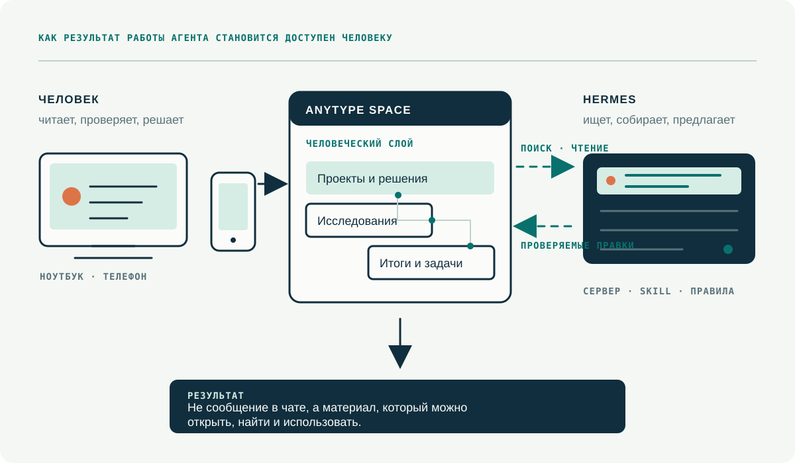

Когда агент начинает делать чуть больше, чем отвечать в чате, быстро обнаруживается странная штука.
Проблема не в том, что он мало помнит. Проблема в том, что результат его работы часто остаётся там же, где возник: в переписке, в папке на сервере, в случайном документе или в сервисе, куда человек потом не возвращается.
Агент разобрал встречу. Где итог?
Подготовил исследование. Где первоисточники, правки и финальная версия?
Собрал идею продукта. Как открыть её с телефона, показать коллеге, найти через месяц и не объяснять, где лежит «точно последняя» версия?
Если на эти вопросы нет нормального ответа, агент становится очень быстрым производителем цифрового шума. Полезного, иногда красивого, но шума.
У чата есть память. У работы должна быть библиотека
В чате кажется, что вся работа уже лежит перед глазами. Пока её мало, так и есть.
Но потом появляются десятки тредов, файлы, ссылки, версии и решения, которые менялись по ходу дела. В переписке плохо жить результату, который должен пережить один вечер.
Агенту нужна рабочая память. Человеку нужен понятный архив. И это не одно и то же.
Рабочая память может быть технической и временной: контекст текущей задачи, черновые файлы, промежуточные расчёты. В человеческий слой должны попадать вещи, которые можно открыть и использовать: заметка, решение, план, исследование, бриф, презентация, список задач, ссылка на исходник, готовый файл.
Хороший агент оставляет после себя не историю сообщений, а материал, который человек может найти и использовать.
Если сваливать в личное хранилище всё подряд, оно быстро становится кладбищем служебных артефактов. Если ничего не сохранять, каждый следующий разговор начинается почти с нуля.
Что должно уметь хранилище для агента
Я всё больше думаю, что у любого работающего агента должно быть хранилище, которое одновременно отвечает четырём требованиям:
- Агент может в него писать и читать по понятным правилам.
- Человек может открыть результат без терминала и без знания внутренней структуры сервера.
- Материалы синхронизируются между устройствами.
- Хранилище не превращает данные в заложников одной облачной компании.
Notion долго был удобным ответом. У него хороший интерфейс, сильная совместная работа и развитый API. Но если ты живёшь и работаешь в России, это уже не та инфраструктура, на которую можно спокойно опирать единственную библиотеку своей работы. И тем более не тот фундамент, вокруг которого хочется строить постоянного агента.
Obsidian остаётся отличным инструментом там, где важны обычные файлы, Markdown и полный контроль над каталогом. Мы тоже проходили связку «Obsidian + приватный GitHub + синхронизация по расписанию». Она рабочая. Но в ней приходится думать о коммитах, пушах, пуллах и конфликтах именно в тот момент, когда человек просто хотел открыть заметку с телефона.
| Подход | Сильная сторона | Что ломает сценарий агента |
|---|---|---|
| Notion | Удобный интерфейс, зрелая коллаборация, API | Внешняя зависимость, которая для России перестала быть абстрактным риском |
| Obsidian + Git | Обычные файлы, переносимость, история версий | Синхронизация и конфликты становятся отдельной работой |
| Anytype | Local-first база, объекты, связи, синхронизация и человеческий интерфейс | Нужно сначала спроектировать структуру, а не свалить всё в корень |
Почему мы выбрали Anytype
Нужен был не просто «ещё один Notion» и не облачная папка, в которую агент складывает файлы.
Нужна была система, где данные остаются на устройствах и доступны офлайн; у заметки, задачи, человека, проекта или файла могут быть свои свойства и связи; человек видит не API-ответ, а нормальные страницы, карточки, коллекции и поиск.
Под эту задачу неожиданно хорошо подходит Anytype.
Внутри Anytype всё строится вокруг объектов. Страница, заметка, задача, человек, документ, проект, закладка или встреча могут быть разными типами с полями и связями. Это ближе к личной базе данных с человеческим интерфейсом, чем к папке с Markdown-файлами.
Для агента это особенно полезно. Он может не просто положить текст «куда-то», а создать объект нужного типа, указать проект, тему, статус, дату, источник и связь с предыдущими материалами. А человек потом открывает не технический JSON, а внятную карточку в привычной структуре.
Anytype не стоит воспринимать как Dropbox, Google Drive или сетевой диск. Его сила не в том, чтобы бездумно хранить тысячи файлов в папках. Его сила в том, чтобы собирать вокруг материалов смысл: что это, к какому проекту относится, кто автор, откуда взялось и что с этим делать дальше.
Как устроена связка Hermes × Anytype
Упрощённо она состоит из трёх частей: человек работает в Anytype, Hermes работает на сервере, а между ними есть отдельный слой доступа с ограниченными правами на конкретное пространство.

Hermes получает задачу в Telegram, по расписанию или через другой канал. Разбирает встречу, проводит исследование, собирает черновик, обновляет реестр, готовит материалы. Потом результат оказывается там, где его можно открыть с телефона, найти по проекту и использовать дальше.
Например, после рабочей встречи Hermes кладёт в раздел проекта итог с решениями, задачами и ссылкой на запись. Через неделю можно попросить агента собрать все решения по проекту за месяц, а не искать их вручную по чатам.
Или агент готовит исследование. В базе появляется не один длинный ответ, а карточка материала с тезисом, источниками, статусом проверки и связью с идеей, для которой исследование собирали.
Что пришлось сделать, чтобы агент не разрушил базу
Мы не просто подключили красивую кнопку. Для работы Hermes с Anytype собрали отдельный открытый skill ↗ с правилами, которые не дают базе развалиться после первой же сотни записей.
Сначала модель, потом запись
Если каждый результат становится новой страницей верхнего уровня, через неделю база уже выглядит как папка «Разное». Сначала нужна модель: какие есть разделы, типы объектов, свойства, теги, даты и связи. Только потом агент начинает создавать материалы.
Человеку нужна навигация, а не только ссылки
Текстовая ссылка на объект технически работает, но в личной базе она не заменяет нормальную структуру. Если человек просит раздел, ему нужна страница с видимыми дочерними карточками. Не список URL, не скрытая системная связь и не пустая оболочка.
Локальный API и постоянный серверный агент являются разными задачами
На одном компьютере агент может работать с локальным API. Если нужно, чтобы он продолжал работу, пока ноутбук выключен, нужен отдельный клиентский слой и технический аккаунт с правами только на нужное пространство.
Синхронизацию нельзя подменять копированием файлов базы
Рабочая база не должна синхронизироваться поверх Dropbox, Git или сетевой папки. Такие слои хороши для резервных копий и экспорта, но не для одновременной работы с живой базой. У неё должен быть свой механизм синхронизации.
Не всё можно и нужно отдавать агенту
В личную базу нельзя бездумно сливать ключи, пароли, токены, системные логи, медицинские записи и другие чувствительные данные. Хорошее хранилище агента строится не на принципе «агент видит всё». Оно строится на принципе «агент видит достаточно, чтобы сделать конкретную работу».
Свой сервер имеет смысл не сразу
Anytype можно использовать через его обычную синхронизацию, работать только локально или поднимать собственную сеть синхронизации на своей инфраструктуре.
Последнее особенно интересно, если нужен полный контроль. Но я бы не превращал self-hosting в ритуал «теперь я цифровой суверен». Свой контур надо обслуживать: следить за доступностью, обновлениями, резервным копированием, местом на диске и правами технических аккаунтов.
Разумнее начать с работающей человеческой базы и ограниченного доступа агента. Наладить структуру, права, правила записи и резервное копирование. Посмотреть, действительно ли база стала центром работы, а не ещё одним пустым сервисом. И только потом решать, нужен ли отдельный сервер под всю сеть.
Суверенитет здесь не про сервер в шкафу. Он про способность продолжить работу со своими данными, когда у облачного провайдера меняются правила.
С чего начать
- Выберите одну рабочую область: контент, клиентские проекты или личные исследования.
- Определите четыре-пять типов объектов, которые там действительно повторяются.
- Решите, какие результаты агент имеет право создавать сам, а какие только предлагать.
- Дайте агенту доступ только к этой области, а не ко всей цифровой жизни.
- Через месяц проверьте простую вещь: вы стали быстрее находить и использовать результаты работы или просто добавили ещё один сервис.
Ответ на этот вопрос и покажет, нужна ли вам такая связка.
Anytype Agent Skill
Как агенту работать с пространством Anytype безопасно: навигация, схема данных, поиск, минимальные изменения и обязательная проверка результата.